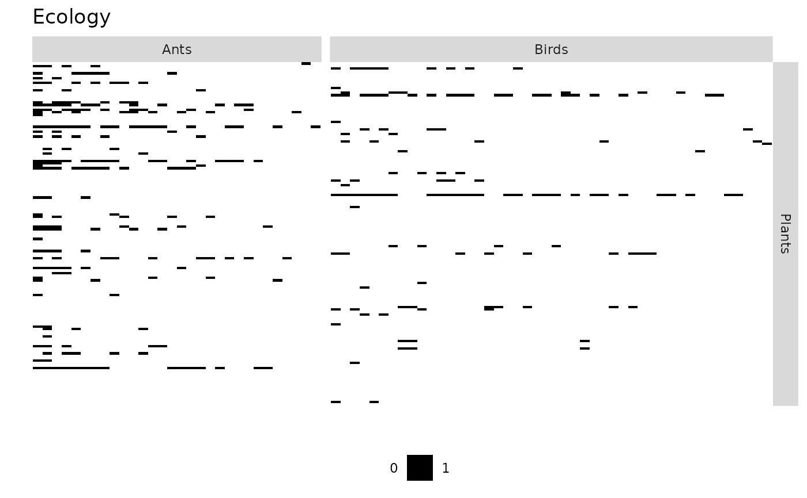
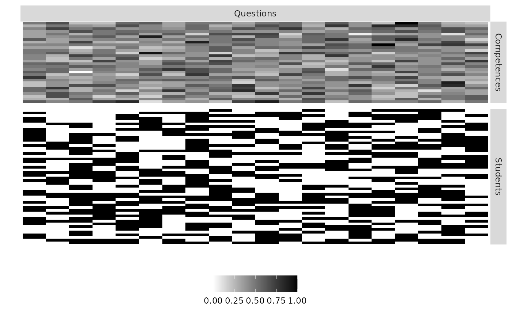

Plot the matrices corresponding to a Multipartite Network
Source:R/plotMyMultipartiteMatrix.R, R/plotMyMultiplexeMatrix.R
plotMyMultipartiteMatrix.RdPlot the matrices corresponding to a Multipartite Network
Plot the matrices corresponding to a Multiplex Network
plotMyMultipartiteMatrix(listSBM, memberships = NULL, plotOptions = list()) plotMyMultipartiteMatrix(listSBM, memberships = NULL, plotOptions = list())
Arguments
| listSBM | : a list of objects representing the multipartite network (see) |
|---|---|
| memberships | : a list of length equal to the number of Functional Groups providing the clusterings inside each group. |
| plotOptions | : a list containing the options. See details. |
Value
a ggplot object corresponding to the plot
a ggplot object corresponding to the plot
Details
plotOptions is a list containing the following items
"normalized":Boolean. TRUE if the various matrices are presented in the same scale (between O and 1). FALSE otherwise. Default value FALSE
"compact":Boolean. Default value is TRUE if you ask for the matrices to be transposed to have a more compact view
"legend": Boolean. Set TRUE if you want to see the legend. Default value is FALSE
"legend.title": Boolean. Set TRUE if you want to print the title of the legend. Default value is FALSE
"legend.position": Position of the legend. Possible values are 'bottom', 'top','left,'right'. Default value is 'bottom'
"nodeNames": Set true if the node Names must be plotted. Default value is FALSE
"line.color":The color of the lines to separate groups. Default value is red
"line.width":Width of the lines to separate groups. Default value is NULL, automatically chosen
"title": Title of the plot. Default value is NULL
plotOptions is a list containing the following items
"normalized":Boolean. TRUE if the various matrices are presented in the same scale (between O and 1). FALSE otherwise. Default value FALSE
"compact":Boolean. Default value is TRUE if you ask for the matrices to be transposed to have a more compact view
"legend": Boolean. Set TRUE if you want to see the legend. Default value is FALSE
"legend.title": Boolean. Set TRUE if you want to print the title of the legend. Default value is FALSE
"legend.position": Position of the legend. Possible values are 'bottom', 'top','left,'right'. Default value is 'bottom'
"nodeNames": Set true if the node Names must be plotted. Default value is FALSE
"line.color":The color of the lines to separate groups. Default value is red
"line.width":Width of the lines to separate groups. Default value is NULL, automatically chosen
"title": Title of the plot. Default value is NULL
Examples
data("multipartiteEcologicalNetwork") Net <- multipartiteEcologicalNetwork type='bipartite' model = 'bernoulli' directed = FALSE listNet <- list() listNet[[1]] = defineSBM(Net$Inc_plant_ant, model,type,directed, dimLabels = c(row = "Plants", col = "Ants")) listNet[[2]] = defineSBM(Net$Inc_plant_bird,model,type,directed, dimLabels =c(row = "Plants",col = "Birds")) plotMyMultipartiteMatrix(listNet,plotOptions=list(legend = TRUE,title='Ecology'))listNet <- list() listNet[[1]] <- defineSBM(matrix(rbinom(1000,1,0.5),20,50), model = 'bernoulli', type ='bipartite', directed = NA, dimLabels = c(row="Questions",col="Students")) listNet[[2]] <- defineSBM(matrix(rpois(20*30,8),30,20), model = 'poisson', type ='bipartite',directed = NA, dimLabels = c(row="Competences",col="Questions")) plotMyMultipartiteMatrix(listNet,plotOptions=list(legend = TRUE,compact = FALSE))data("multipartiteEcologicalNetwork") Net <- multipartiteEcologicalNetwork type='bipartite' model = 'bernoulli' directed = FALSE listNet <- list() listNet[[1]] = defineSBM(Net$Inc_plant_ant, model,type,directed, dimLabels = c(row = "Plants", col = "Ants")) listNet[[2]] = defineSBM(Net$Inc_plant_bird,model,type,directed, dimLabels =c(row = "Plants",col = "Birds")) plotMyMultipartiteMatrix(listNet,plotOptions=list(legend = TRUE,title='Ecology'))listNet <- list() listNet[[1]] <- defineSBM(matrix(rbinom(1000,1,0.5),20,50), model = 'bernoulli', type ='bipartite', directed = NA, dimLabels = c(row="Questions",col="Students")) listNet[[2]] <- defineSBM(matrix(rpois(20*30,8),30,20), model = 'poisson', type ='bipartite',directed = NA, dimLabels = c(row="Competences",col="Questions")) plotMyMultipartiteMatrix(listNet,plotOptions=list(legend = TRUE,compact = FALSE))